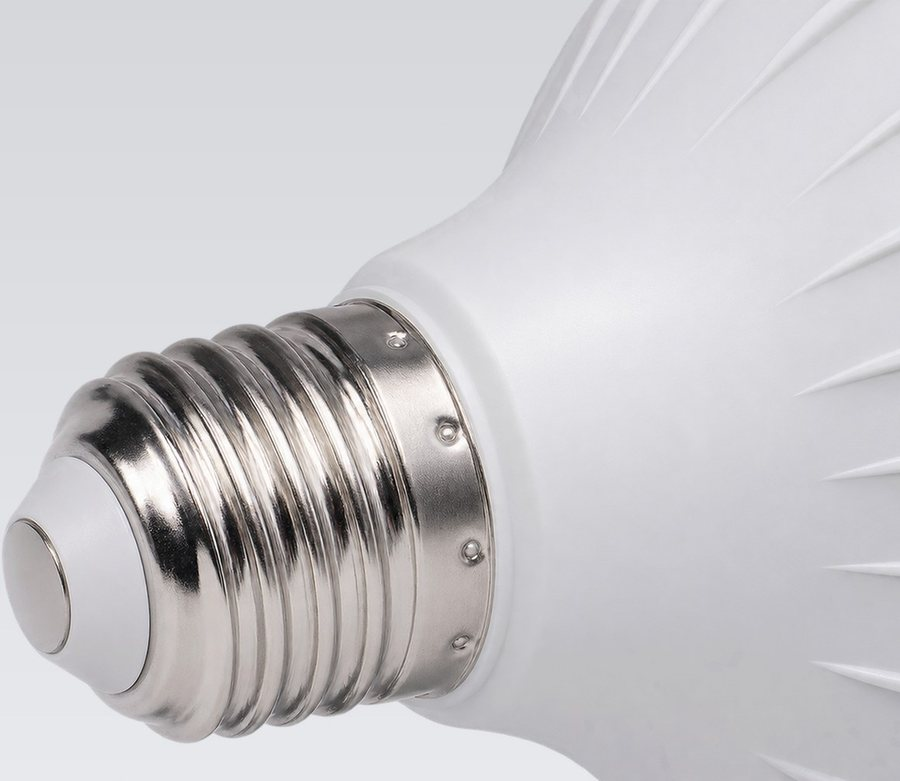

Diğer Ürünler
Torch Ampul
Torch Lamps
E2730–60 W
E27 duylu, 30–60 W torch ampuller; standart ve lensli seçenekleriyle.
Torch Ampul
| Ürün Kodu | Güç (W) | Işık Akısı (lm) | Renk Sıcaklığı (K) | Etkinlik (lm/W) | Boyutlar (mm) | Koli Adedi |
|---|---|---|---|---|---|---|
| CM-TRC-30W | 30 | 3300 | 6500 | 110 | 100x175 | 24 |
| CM-TRC-40W | 40 | 4400 | 6500 | 110 | 115x210 | 24 |
| CM-TRC-50W | 50 | 5500 | 6500 | 110 | 125x220 | 24 |
| CM-TRC-60W | 60 | 6600 | 6500 | 110 | 140x230 | 24 |
Lensli Torch Ampul
| Ürün Kodu | Güç (W) | Işık Akısı (lm) | Renk Sıcaklığı (K) | Etkinlik (lm/W) | Boyutlar (mm) | Koli Adedi |
|---|---|---|---|---|---|---|
| CM-TRCM-30W | 30 | 3300 | 6500 | 110 | 100x175 | 24 |
| CM-TRCM-40W | 40 | 4400 | 6500 | 110 | 115x210 | 24 |
| CM-TRCM-50W | 50 | 5500 | 6500 | 110 | 125x220 | 24 |
| CM-TRCM-60W | 60 | 6600 | 6500 | 110 | 140x230 | 24 |
Ürün kodları kelvin, boyut ve opsiyonlara göre değişebilir. Lütfen satış ekibi ile iletişime geçiniz.
Aynı ailedeki diğer ürünler
Diğer Ürünler
Bu ürünler için teklif alın
Adet, boy ve renk sıcaklığını iletin; satış ekibi size dönüş yapsın.
Teklif iste+90 212 674 90 16